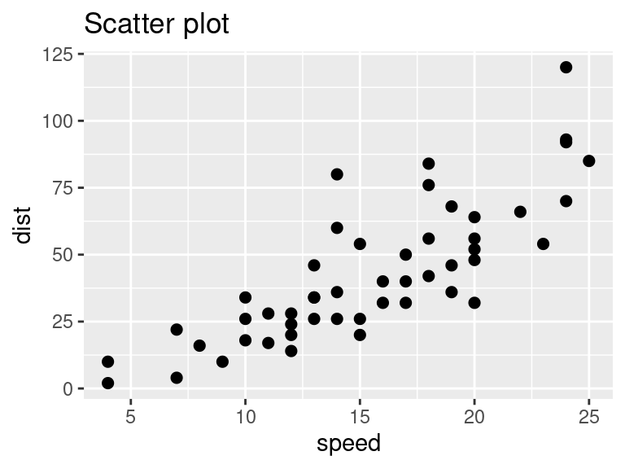
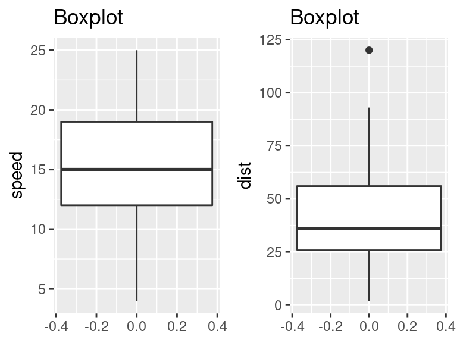
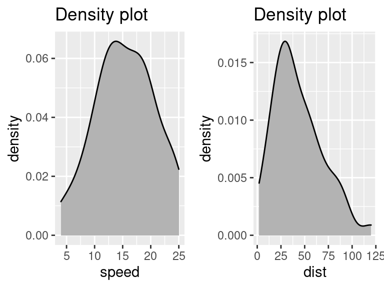
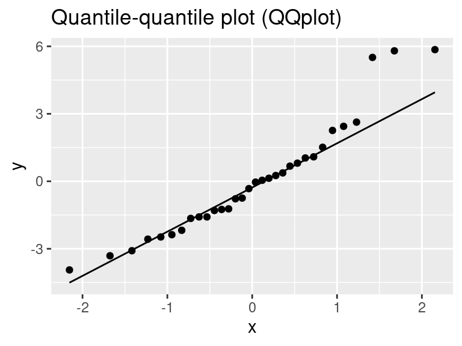
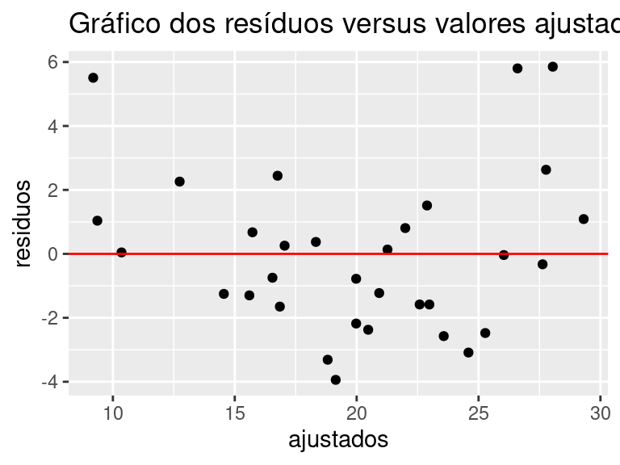
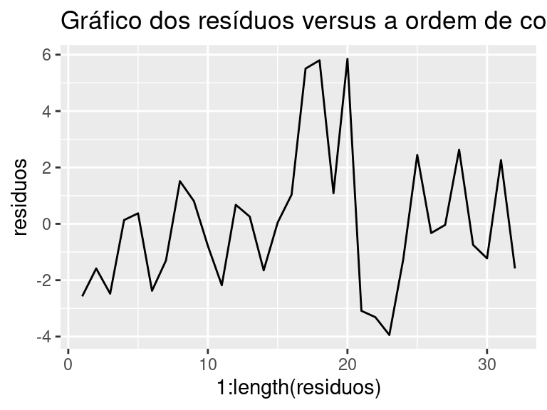

Capítulo 9 Regressão Linear
Regressão Linear é uma coleção de técnicas estatísticas para construir modelos que descrevem de maneira razoável relações entre várias variáveis explicativas de um determinado processo. Isto é, o principal objetivo da Regressão Linear é modelar uma variável contínua \(Y\) como uma função matemática de uma ou mais variávei(s) \(X\) para que possamos usar esse modelo de regressão para prever o \(Y\) quando apenas o \(X\) é conhecido. Usamo a nomenclatura Regressão Linear Simples quando somente uma única variável explicativa será utilizada para explicar \(Y\), enquanto Regressão Linear Múltipla lida com mais de uma variável explicativa.
A equação matemática pode ser generalizada da forma:
\[Y=X\beta+\varepsilon,\]
onde,
\[Y = \left[\begin{array}{r} Y_1 \\ Y_2 \\ \vdots \\ Y_n \end{array}\right], ~ X = \left[\begin{array}{rrrrr} 1 & x_{11} & x_{12} & \ldots & x_{1p} \\ 1 & x_{21} & x_{22} & \ldots & x_{2p} \\ \vdots & \vdots & \vdots & \ddots & \ldots \\ 1 & x_{n1} & x_{n2} & \ldots & x_{np} \\ \end{array}\right], ~ \beta = \left[\begin{array}{r} \beta_0 \\ \beta_1 \\ \vdots \\ \beta_p \end{array}\right], ~ \varepsilon = \left[\begin{array}{r} \varepsilon_1 \\ \varepsilon_2 \\ \vdots \\ \varepsilon_n \end{array}\right],\]
em que
- \(Y\) é um vetor \(n\times 1\) cujos componentes corresponde às \(n\) respostas;
- \(X\) é uma matriz de dimensão \(n\times (p+1)\) denominada matriz do modelo;
- \(\varepsilon\) é um vetor de dimensão \(n\times 1\) cujos componentes são os erros, a parte de \(Y\) que o modelo de regressão não consegue explicar; e
- \(\beta\) é um vetor \((p+1)\times 1\) cujos elementos são os coeficientes de regressão.
Contextualizando com um exemplo
Para exemplificar, vamos usar a base de dados \(\texttt{cars}\) que vem com o software \(\texttt{R}\). Você pode acessar essa base de dados simplesmente digitando \(\texttt{cars}\) no console do seu \(\texttt{R}\). Esta base consiste em 50 observações (linhas) e 2 variáveis (colunas) - \(\texttt{dist}\) e \(\texttt{speed}\). As primeiras seis observações são:
## speed dist
## 1 4 2
## 2 4 10
## 3 7 4
## 4 7 22
## 5 8 16
## 6 9 109.1 Gráficos úteis
Antes de começarmos a construir o modelo de regressão, é uma boa prática analisar e entender as variáveis. O objetivo deste exemplo é construir um modelo de regressão simples que possamos usar para prever a Distância (\(\texttt{dist}\)) estabelecendo uma relação linear estatisticamente significativa com a Velocidade (\(\texttt{speed}\)). Normalmente, para cada uma das variáveis independentes (preditoras), os seguintes gráficos são desenhados para visualizar o comportamento:
- Scatter plot (gráfico de dispersão): Os gráficos de dispersão podem ajudar a visualizar quaisquer relações lineares entre a variável dependente (resposta) e as variáveis independentes (preditoras). Idealmente, se você tiver várias variáveis preditoras, um gráfico de dispersão será desenhado para cada uma delas contra a resposta.
##
## Attaching package: 'gridExtra'## The following object is masked from 'package:dplyr':
##
## combine
O gráfico de dispersão sugere uma relação linearmente crescente entre as variáveis \(\texttt{dist}\) e \(\texttt{speed}\). Isso é bom, porque, uma das suposições subjacentes à regressão linear é que a relação entre as variáveis de resposta e preditoras é linear e aditiva.
- Boxplot: Para identificar quaisquer observações discrepantes na variável. Ter discrepâncias no seu preditor pode afetar drasticamente as previsões, pois elas podem afetar facilmente a direção/inclinação da reta de melhor ajuste.

Geralmente, qualquer ponto de dados que esteja fora do intervalo interquartílico de \(1,5\times(1,5 \times IQR)\) é considerado um outlier, onde, o \(IQR\) é calculado como a distância entre os valores do \(25º\) e \(75º\) percentil dessa variável.
- Density plot (gráfico de densidade): Para ver a distribuição da variável preditora. Idealmente, é preferida uma distribuição próxima da normal (uma curva em forma de sino), sem ser inclinada para a esquerda ou direita.

9.2 Modelo estatístico
Agora, vamos definir o modelo como,
\[Dist=\beta_0+\beta_1\times Speed+\varepsilon~\text{ou}~Y=\beta X+\varepsilon,~\text{onde}~Y = \left[\begin{array}{r} Y_1 \\ Y_2 \\ \vdots \\ Y_{50} \end{array}\right], ~ X = \left[\begin{array}{rr} 1 & x_{1,1} \\ 1 & x_{2,1} \\ \vdots & \vdots \\ 1 & x_{{50},1} \\ \end{array}\right], ~ \beta = \left[\begin{array}{r} \beta_0 \\ \beta_1\end{array}\right], ~ \varepsilon = \left[\begin{array}{r} \varepsilon_1 \\ \varepsilon_2 \\ \vdots \\ \varepsilon_{50}\end{array}\right],\]
em que \(Y\) representa a variável resposta (ditância), \(x_1\) representa a variável explicativa (velocidade) e \(\varepsilon\) representa o erro experimental. Esse é um modelo de regressão linear simples. O termo linear é usado pois a equação é uma função linear de parâmetros desconhecidos \(\beta_0\) e \(\beta_1\) denominados coeficientes da regressão.
De maneira geral, a variável resposta \(Y\) pode ser relacionada a um número \(p\) de variáveis de entrada e o modelo de regressão linear com \(p\) variáveis explicativas também pode ser escrito como
\[Y_i=\beta_{0}+\beta_{1}x_{i1}+\beta_{2}x_{i2}+...+\beta_{p}x_{ip}+\varepsilon_i,~~~i=1,...,n,\]
em que,
- \(x_{i1},x_{i2},...,x_{ip}\) são valores das variáveis explicativas, constantes conhecidas;
- \(\beta_{0},\beta_{1},\beta_{2},...,\beta_{p}\) são parâmetros ou coeficientes da regressão;
- \(\varepsilon_i\) são erros aleatórios independentes.
Este modelo descreve um hiperplano p-dimensional referente às variáveis explicativas. O parâmetro \(\beta_0\) corresponde ao intercepto do plano com o eixo \(z\). Se \(x=(x_1, x_2,\ldots,x_p)=(0,0,\ldots,0)\) o parâmetro \(\beta_0\) fornece a resposta média nesse ponto. Caso contrário, não é possível interpretar o parâmetro \(\beta_0\). Já os coeficientes \(\beta_i\) indicam uma mudança na resposta média a cada unidade de mudança em \(x_i\), quando as demais variáveis são mantidas fixas.
9.2.1 Efeito das interações
Modelos mais complexos do que o apresentado também são analisados usando técnicas de regressão linear múltipla. Consideremos o modelo de regressão linear com duas variáveis regressoras, \(x_1\) e \(x_2\), dado por
\[Y=\beta_0+\beta_1 x_{1}+\beta_2 x_{2}+\beta_{3}\underbrace{x_{1}\,x_{2}}_{\mbox{interação}} + \varepsilon.\]
Neste caso, \(x_1x_2\) representa a interação existente entre as variáveis \(x_1\) e \(x_2\). Se a interação está presente e é significativa, o efeito de \(x_{1}\) na resposta média depende do nível de \(x_2\) e analogamente o efeito de \(x_2\) na resposta média depende do nível de \(x_{1}\).
Sabendo que \(E(\varepsilon)=0\), tem-se que
\[E(Y|x)=\beta_0+\beta_1x_1+\beta_2x_2+\beta_3x_1x_2.\]
A interpretação para os parâmetros \(\beta_1\) e \(\beta_2,\) no modelo com interação, não é o mesmo visto anteriormente.
9.2.2 Suposições para o modelo
As suposições necessárias para o modelo de regressão linear são:
O erro tem média zero e variância \(\sigma^2\), desconhecida;
Os erros são não correlacionados;
Os erros têm distribuição normal;
As variáveis regressoras \(x_{1}, x_{2}, \ldots, x_{p}\) assumem valores fixos.
As suposições (i)-(iii), simbolicamente, podem ser representadas por
\[\varepsilon_{i} {\stackrel{\mbox{iid}}{\sim}}N(0, \sigma^2).\]
Se as suposições do modelo se verificam, então a variável \(Y\) tem distribuição normal com variância \(\sigma^2\) e média
\[E(Y\mid x)=\beta_0+\beta_1 x_{1}+\beta_2 x_{2}+\ldots+\beta_p x_{p}.\]
Neste caso, os parâmetros \(\beta_j,j=1,\dots,p\) representam a variação (média) esperada na variável resposta (\(Y\)) quando a variável \(x_j\) sofre um acréscimo unitário, enquanto todas as outras variáveis \(x_i~~(i\neq j)\) são mantidas constantes. Por esse motivo os \(\beta_j\) são chamados de coeficientes parciais.
Se os valores de \(x_j\) incluem os valores \(x_j=0,j=1,\dots,p\) então \(\beta_0\) é a média de \(Y\) quando \(x_j=0.\) Em caso contrário não existe interpretação prática.
9.3 Representação Matricial
Lembrando que se temos \(n\) observações \((n > p)\) da variável resposta e das \(p\) variáveis explicativas, onde, \(y_i\) é o valor da variável resposta na \(i\)-ésima observação enquanto que \(x_{ij}\) é o valor da variável \(x_j\) na \(i\)-ésima observação, podemos representar os dados de um Modelo de Regressão Linear Múltipla da seguinte forma:
| \(y\) | \(x_1\) | \(x_2\) | \(\ldots\) | \(x_p\) |
|---|---|---|---|---|
| \(y_1\) | \(x_{11}\) | \(x_{12}\) | \(\ldots\) | \(x_{1p}\) |
| \(y_2\) | \(x_{21}\) | \(x_{22}\) | \(\ldots\) | \(x_{2p}\) |
| \(\vdots\) | \(\vdots\) | \(\vdots\) | \(\vdots\) | \(\vdots\) |
| \(y_n\) | \(x_{n1}\) | \(x_{n2}\) | \(\ldots\) | \(x_{np}\) |
onde cada observação satisfaz,
\[Y_i=\beta_0 + \beta_1 x_{i1} + \beta_2 x_{i2} + \ldots + \beta_p x_{ip} + \varepsilon_i, \quad i=1,\ldots, n\]
Considerando que a entrada de dados apresentada na tabela, o modelo pode ser escrito como
\[Y=X\beta+\varepsilon\]
onde,
\[Y = \left[\begin{array}{r} Y_1 \\ Y_2 \\ \vdots \\ Y_n \end{array}\right], ~ X = \left[\begin{array}{rrrrr} 1 & x_{11} & x_{12} & \ldots & x_{1p} \\ 1 & x_{21} & x_{22} & \ldots & x_{2p} \\ \vdots & \vdots & \vdots & \ddots & \ldots \\ 1 & x_{n1} & x_{n2} & \ldots & x_{np} \\ \end{array}\right], ~ \beta = \left[\begin{array}{r} \beta_0 \\ \beta_1 \\ \vdots \\ \beta_p \end{array}\right], ~ \varepsilon = \left[\begin{array}{r} \varepsilon_1 \\ \varepsilon_2 \\ \vdots \\ \varepsilon_n \end{array}\right],\]
Em que,
- \(Y\) é um vetor \(n\times 1\) cujos componentes corresponde às \(n\) respostas;
- \(X\) é uma matriz de dimensão \(n\times (p+1)\) denominada matriz do modelo;
- \(\varepsilon\) é um vetor de dimensão \(n\times 1\) cujos componentes são os erros, a parte de \(Y\) que o modelo de regressão não consegue explicar; e
- \(\beta\) é um vetor \((p+1)\times 1\) cujos elementos são os coeficientes de regressão.
9.3.1 Estimação dos parâmetros do modelo
Os parâmetros de um modelo de regressão são exclusivamente os coeficientes \(\beta_j\). Para estimá-los iremos utilizar o método dos mínimos quadrados que tem como objetivo encontrar o vetor \(\widehat{\beta}\) que minimiza os erros ao quadrado (\(\varepsilon^2\)):
\[ \begin{aligned} L&=\sum_{i=1}^n\varepsilon_i^2=\varepsilon^\prime \varepsilon\\ &= (Y-X\beta)^\prime (Y-X\beta)\\ &=Y^\prime Y-Y^\prime X\beta-\beta^\prime X^\prime Y+\beta^\prime X^\prime X\beta\\ &=Y^\prime Y-2\beta^\prime X^\prime Y+\beta^\prime X^\prime X\beta \end{aligned} \]
Sendo que \(Y^\prime X\beta=\beta^\prime X^\prime Y\), pois o produto resulta em um escalar. A notação \(X^\prime\) representa o transposto da matriz \(X\) enquanto que \(Y^\prime\) e \(\beta^\prime\) representam os transpostos dos vetores \(Y\) e \(\beta\), respectivamente.
Usando a técnica de derivação (em termos matriciais) obtemos,
\[\dfrac{\partial L}{\partial\beta}=-2X^\prime Y+2X^\prime X\beta\]
Igualando a zero e substituindo o vetor \(\beta\) pelo vetor \(\widehat{\beta}\), temos \((X^\prime X)\widehat{\beta}=X^\prime Y\). Em geral, a matriz \((X^\prime X)\) é não singular, ou seja, tem determinante diferente de zero, e portanto é invertível. Desta forma, conclui-se que os estimadores para os parâmetros \(\beta_j,\quad j=0,\dots,p\) são dados pelo vetor
\[\widehat{\beta}=(X^\prime X)^{-1} X^\prime Y.\]
Portanto, o modelo de regressão linear ajustado e o vetor de resíduos são respectivamente,
\[\widehat{Y}=X\widehat{\beta}\]
e
\[\hat\varepsilon=e=Y-\widehat{Y}.\]
9.3.2 Propriedades dos estimadores
Pelo Teorema de Gauss-Markov temos que o estimador de mínimos quadrados \(\widehat{\beta}\) é não viciado e tem variância mínima entre todos os estimadores não viciados que são combinações lineares dos \(Y_i\). Desta propriedade descorremos que,
- \(E(\widehat{\beta})=\beta\)
- \(SQE = y^\prime y-\widehat{\beta}^\prime X^\prime y\)
- \(\dfrac{SQE}{\sigma^2}\sim\chi^{2}_{n-(p+1)}\)
- \(\widehat{\sigma}^2=QME=\dfrac{SQE}{n-p-1}\)
- \(\widehat{\sigma}^{2}(\widehat{\beta}_j)=\widehat{\sigma}^2C_{jj}\), sendo \(C\) a diagonal da matriz \({(X^\prime X)}^{-1}\)
9.3.3 Exemplo
O ganho de um transistor consiste na diferença entre o emissor e o coletor. A variável (em hFE) pode ser controlada no processo de deposição de íons por meio das variáveis (em minutos) e (\(\times 10^{14}\)).
As 14 observações coletadas no experimento estão expostas abaixo:
| Ganho | Tempo | Dose |
|---|---|---|
| 1004 | 195 | 4 |
| 1636 | 255 | 4 |
| 852 | 195 | 4.6 |
| 1506 | 255 | 4.6 |
| 1272 | 225 | 4.2 |
| 1270 | 225 | 4.1 |
| 1269 | 225 | 4.6 |
| 903 | 195 | 4.3 |
| 1555 | 255 | 4.3 |
| 1260 | 225 | 4 |
| 1146 | 225 | 4.7 |
| 1276 | 225 | 4.3 |
| 1225 | 225 | 4.72 |
| 1321 | 230 | 4.3 |
Supor a construção de um modelo para relacionar a variável ganho (em íons) com as variáveis explicativas emissor de tempo e emissor da dose é razoável. Assim, definimos o modelo de regressão linear múltipla dado por,
\[Y=\beta_0+\beta_1x_1+\beta_2x_2+\varepsilon\]
onde,
- \(Y\) representa a variável resposta (o ganho em íons)
- \(x_1\) e \(x_2\) representam as variáveis explicativas (o emissor de tempo e o emissor de dose, respectivamente)
- \(\varepsilon\) representa o erro experimental
- \(\beta_0,\beta_1\) e \(\beta_2\) são denominados coeficientes da regressão
Esse é um modelo de regressão linear múltipla com duas variáveis independentes ou explicativas (\(x_1\) e \(x_2\)).
Solução
Podemos estimar os coeficientes \(\beta\)’s utilizando Mínimos Quadrados, resultando em
\[\widehat{\beta}=(X^\prime X)^{-1} X^\prime Y= \begin{bmatrix}-520.08 \\ 10.78 \\ -152.15\end{bmatrix}.\]
Isto é,
\[\text{Ganho}=-520.08+10.78\times\text{Tempo}-152.15\times\text{Dose}\]
Assim,
- \(\beta_2=-152,15\) indica que a cada acréscimo de uma unidade na \(Dose\) a resposta média decrescerá \(152,15\) unidades; e
- \(\beta_1=10,78\) indica um acréscimo na resposta média de \(10,78\) unidades para cada acréscimo de uma unidade na variável \(Dose\)
Verificando as propriedados dos estimadores, temos que:
\[\widehat{\sigma}^2= QME = \dfrac{SQE}{n-p-1}=\dfrac{y^\prime y-\widehat{\beta}^\prime X^\prime y}{14-2-1}=1.220,1\]
Assim,
\[\widehat{\sigma}^{2}(\widehat{\beta}_{0})=\widehat{\sigma}^{2}C_{00}=36905,13\implies \widehat{\sigma}(\widehat{\beta}_{0})=192,1071\]
\[\widehat{\sigma}^{2}(\widehat{\beta}_{1})=\widehat{\sigma}^{2}C_{11}=0,2249791\implies \widehat{\sigma}(\widehat{\beta}_{1})=0,4743196\]
\[\widehat{\sigma}^{2}(\widehat{\beta}_{2})=\widehat{\sigma}^{2}C_{22}=1345,088\implies \widehat{\sigma}(\widehat{\beta}_{2})=36,67544.\]
9.4 Análise de Variância (ANOVA)
A análise de variância é baseada na decomposição da soma de quadrados. Em outras palavras, o desvio de uma observação em relação à média pode ser decomposto como o desvio da observação em relação ao valor ajustado pela regressão mais o desvio do valor ajustado em relação à média, isto é, podemos escrever \((Y_i-\bar{Y})\) como
\[(Y_i-\bar{Y})=(Y_i-\bar{Y}+\widehat{Y}_i-\widehat{Y}_i)=(\widehat{Y}_i-\bar{Y})+(Y_i-\widehat{Y}_i).\]
Elevando cada componente ao quadrado e somando para todo o conjunto de observações, obtemos
\[\sum_{i=1}^n(Y_i-\bar{Y})^{2} = \sum_{i=1}^n(\widehat{Y}_i - \bar{Y})^2 + \sum_{i=1}^n(Y_i-\widehat{Y}_i)^{2},\]
em que
\[\sum_{i=1}^n(Y_i-\bar{Y})^{2}=SQT~~~~\mbox(é\ a\ Soma\ de\ Quadrados\ Total);\]
\[\sum_{i=1}^n(\widehat{Y}_i-\bar{Y})^2=SQR~~~~\mbox(é\ a\ Soma\ de\ Quadrados\ da\ Regressão)\ e\]
\[\sum_{i=1}^n(Y_i-\widehat{Y}_i)^2=SQE~~~~\mbox(é\ a\ Soma\ de\ Quadrados\ dos\ Erros\ (dos\ Resíduos)).\]
Desta forma, escrevemos
\[SQT=SQR+SQE,\]
em que decompomos a Soma de Quadrados Total em Soma de Quadrados da Regressão e Soma de Quadrados dos Erros.
A soma de quadrados total (SQT), considerando a notação matricial, é dada por
\[SQT=Y^\prime\left(I-\dfrac{J}{n}\right)Y,\]
em que
\[J =\left[\begin{array}{cccc}1~~1~~ \ldots~~1\\1~~1~~\ldots~~1\\\vdots~~\vdots~~\ddots~~\vdots\\1~~1~~\ldots~~1\\\end{array}\right]_{n \times n}.\]
Além disso, de “Propriedades dos Estimadores” temos que a soma de quadrados dos erros (dos resíduos) em notação matricial é dada por
\[SQE=Y^\prime(I-H)Y.\]
A matriz \(I\) é a matriz identidade com dimensão \(n\times n\) e a matriz \(H=X [X^\prime X]^{-1}X^\prime\) é chamada matriz chapéu que transforma o vetor de respostas \(Y\) no vetor de valores ajustados \(\widehat{Y}\), pois
\[\widehat{Y}=X\widehat{\beta}=X[X^\prime X]^{-1}X^\prime Y=HY.\]
Desta forma, obtemos que a soma de quadrados da regressão é dada por
\[SQR=Y^\prime \left(H-\dfrac{J}{n}\right)Y.\]
Notemos que as somas de quadrados da Análise de Variância são representadas na forma quadrática \(Y^\prime AY\), em que \(A\) é uma matriz simétrica.
Vale ressaltar que
- \(H\) é quadrada de dimensão \(n \times n\) e envolve apenas \(X\) (as variáveis independentes assumidas como constantes).
- \(H\) é idempotente, isto é, \(HH=H\).
- As matrizes \(\left(I-\dfrac{J}{n}\right)\), \(\left(H-\dfrac{J}{n}\right)\) e \((I-H)\) são idempotentes.
Em problemas de regressão linear, certos testes de hipóteses sobre os parâmetros do modelo são úteis para verificar a adequabilidade do modelo.
O teste para significância da regressão é um teste para determinar se há uma relação linear entre a variável resposta \(Y\) e algumas das variáveis regressora \(x_1,x_2,\dots,x_p\). Consideremos as hipóteses:
\[H_0:\beta_1=\beta_2=\ldots=\beta_p=0\]
\[H_1:\beta_j \neq 0 \text{ para qualquer } j=1,\ldots,p\]
Se rejeitamos \(H_0\), temos que ao menos uma variável explicativa \(x_1,x_2,\dots,x_p\) contribui significativamente para o modelo.
Sob \(H_0,\) temos que \(\dfrac{SQR}{\sigma^2} \sim \chi^2_{(p)}~~~~\mbox{e que}~~~~\dfrac{SQE}{\sigma^2} \sim \chi^2_{(n-p-1)}.\)
Além disso, temos que \(SQR\) e \(SQE\) são independentes. Logo, concluímos sob \(H_0\) que
\[F_0=\dfrac{\dfrac{SQR}{p}}{\dfrac{SQE}{n-p-1}}= \dfrac{QMR}{QME}~\sim ~F_{(p ; \, n-p-1)}.\]
Portanto, rejeitamos \(H_0\) se \(F_0 > F_{(1-\alpha ; \, p ; \, n-p-1)}\) e se \(p-valor=P[F_{p;n-p-1} > F_0]<\alpha,\) em que \(\alpha\) é o nível de significância considerado. Geralmente adotamos \(\alpha=5\%.\)
A Tabela Anova com a estatística \(F\) é dada por
| Fonte | Soma de Quadrados | Graus de Liberdade | Quadrado Médio | \(F_0\) |
|---|---|---|---|---|
| Regressão | SQR | \(p\) | \(\frac{SQR}{p}\) | \(F_0=\frac{QMR}{QME}\) |
| Erro (Resíduo) | SQE | \(n-p-1\) | \(\frac{SQE}{n-p-1}\) | |
| Total | SQT | \(n-1\) |
9.4.1 Exemplo (continuação)
No nosso exemplo, como \(p-valor<\alpha\) rejeitamos \(H_0\), ou seja, temos que ao menos uma variável explicativa que contribui significativamente para o modelo.
dados = matrix(c(1004, 195, 4,
1636, 255, 4,
852, 195, 4.6,
1506, 255, 4.6,
1272, 225, 4.2,
1270, 225, 4.1,
1269, 225, 4.6,
903, 195, 4.3,
1555, 255, 4.3,
1260, 225, 4,
1146, 225, 4.7,
1276, 225, 4.3,
1225, 225, 4.72,
1321, 230, 4.3), ncol = 3, byrow = T)
Y = dados[,1]
X = cbind(rep(1,nrow(dados)),dados[,2:3])
n = nrow(dados)
p = ncol(dados) - 1
beta = solve(t(X)%*%X)%*%t(X)%*%Y
I = diag(n)
J = matrix(1, nrow = n, ncol = n)
(SQT = t(Y)%*%(I-J/n)%*%Y)## [,1]
## [1,] 665387.2H = X%*%solve(t(X)%*%X)%*%t(X)
(SQE = t(Y)%*%(I-H)%*%Y)## [,1]
## [1,] 13421.12(SQR = t(Y)%*%(H-J/n)%*%Y)## [,1]
## [1,] 651966.1(QMR = SQR/p)## [,1]
## [1,] 325983(QME = SQE/(n-p-1))## [,1]
## [1,] 1220.101(F_0 = QMR/QME)## [,1]
## [1,] 267.177(pvalor = pf(F_0, df1 = p, df2 = n-p-1, lower.tail = F))## [,1]
## [1,] 4.741632e-10| Fonte | Soma de Quadrados | Graus de Liberdade | Quadrado Médio | \(F_0\) | p-valor |
|---|---|---|---|---|---|
| Regressão | 6.519661^{5} | 2 | 3.2598305^{5} | 267.1770159 | 4.7416322^{-10} |
| Erro (Resíduo) | 1.3421115^{4} | 11 | 1220.1013938 | ||
| Total | 6.6538721^{5} | 13 |
9.5 Medidas de Associação
9.5.1 Coeficiente de Determinação Múltiplo (\(R^2\))
O coeficiente de determinação múltiplo é dado por
\[R^2 = \frac{SQR}{SQT} = 1-\frac{SQE}{SQT}.\]
Ele representa a proporção da variabilidade de \(Y\) explicada pelas variáveis regressoras. Assim, quanto mais próximo \(R^2\) estiver de \(1\), maior é a explicação da variável resposta pelo modelo ajustado.
9.5.2 Coeficiente de Determinação Ajustado (\(R^2_a\))
O coeficiente de determinação ajustado é definido como
\[R^2_a=1-\left(\frac{n-1}{n-p}\right)(1-R^2).\]
Este coeficiente ajustado pode ser menor quando outra variável \(X\) entra no modelo, pois a diminuição na \(SQE\) pode ser compensada pela perda de \(1\) grau de liberdade no denominador \(n-p\). Observe que foi exatamente isso que aconteceu no nosso caso exemplo, um indicativo de que alguma variável não é tão significativa.
(R2 = SQR/SQT)## [,1]
## [1,] 0.9798296(R2ajustado = 1-(n-1)/(n-p)*(1-R2))## [,1]
## [1,] 0.97814889.6 Testes de hipóteses para os coeficientes da regressão
Testes de hipóteses para os coeficientes da regressão são fundamentais para se determinar se cada variável explicativa é importante para o modelo de regressão. Por exemplo, o modelo pode ser mais eficaz com a inclusão ou com a exclusão de novas variáveis.
Adicionar uma variável ao modelo de regressão sempre causa um aumento na soma dos quadrados da regressão e um decréscimo na soma dos quadrados do erro. Entretanto, a adição de variáveis regressoras também aumenta a variância do valor ajustado \(\widehat{Y}\). Por isso, devemos ter cuidado para incluir somente variáveis regressoras que realmente explicam a variável resposta.
As hipóteses para testar a significância de qualquer coeficiente de regressão individualmente são dadas por:
\[H_0: \beta_j = 0 ~\text{vs}~ H_1: \beta_j \neq 0,~ j=1,\ldots,p\]
Se \(H_0\) (\(\beta_j=0\)) não é rejeitada, então podemos retirar \(x_j\) do modelo já que esta variável não influencia a resposta de forma significativa.
Supondo que os erros são independentes e identicamente distribuídos temos que \(\widehat{\beta}\sim N_p(\beta;\sigma^2C)\). Assim, sob \(H_0\) temos que
\[N_0=\dfrac{\widehat{\beta}_ j}{\sqrt{\sigma^2 C_{jj}}} \sim N(0,1)\]
Além disso, \(\dfrac{(n-p-1)\widehat{\sigma}^2}{\sigma^2} \sim \chi ^2_{(n-p-1)}\) é independente de \(N_0\), portanto segue que a estatística do teste é dada por
\[t_0=\dfrac{\widehat{\beta}_j}{\sqrt{\widehat{\sigma}^2C_{jj}}} \sim t_{(n-p-1)}\]
A hipótese nula \(\beta_j=0\) é rejeitada se
\[|t_0| > t_{(1-\frac{\alpha}{2},\,n-p-1)}.\]
Considerando o \(p-valor\), dado por meio da expressão
\[2\times P\left( t_{n-p-1}> |t_0| \right),\]
rejeitamos \(H_0\) se \(p-valor<\alpha\).
O denominador é frequentemente chamado de erro padrão de \(\widehat{\beta}_j\) e denotado por
\[se_{(\widehat{\beta}_j)}=\sqrt{\widehat{\sigma}^2C_{jj}}.\]
No nosso exemplo todas as variáveis são significativas no modelo ao considerar \(\alpha=5\%\), no entanto ao considerar \(\alpha=1\%\), o intercepto não se mostra significativo. A decisão de removê-lo ou não da análise pertence a você, especialista.
cov_beta_chapeu = QME%*%diag(solve(t(X)%*%X))
(t_0 = c(beta)/sqrt(cov_beta_chapeu))## [,1] [,2] [,3]
## [1,] -2.707223 22.72973 -4.148522(pvalor = 2*pt(abs(t_0),df=n-p-1,lower.tail = F))## [,1] [,2] [,3]
## [1,] 0.02039185 1.349125e-10 0.0016204999.7 Intervalo de confiança para os coeficientes da regressão
Considerando a estatística \(t_0\), um intervalo com \(100(1-\alpha)\%\) de confiança para os coeficientes da regressão \(\beta_j,~~~j=0,1,2,\ldots,p,\) é dado por
\[\left[\widehat{\beta}_j-t_{\left(\dfrac{\alpha}{2},n-p-1\right)}{\sqrt{\widehat{\sigma}^2 C_{jj}}}\,;\,\widehat{\beta}_j+t_{\left(\dfrac{\alpha}{2},n-p-1\right)}{\sqrt{\widehat{\sigma}^2 C_{jj}}}\, \right].\]
No nosso exemplo considerando \(\alpha=5\%\),
(lim_inf = c(beta)-qt(0.025,df=n-p-1, lower.tail = F)*sqrt(cov_beta_chapeu))## [,1] [,2] [,3]
## [1,] -942.9015 9.737187 -232.871(lim_sup = c(beta)+qt(0.025,df=n-p-1, lower.tail = F)*sqrt(cov_beta_chapeu))## [,1] [,2] [,3]
## [1,] -97.25182 11.82513 -71.42678Assim, um resumo pode ser visto na tabela abaixo:
| \(\beta_j\) | \(t_0\) | \(t_{11;2.5\%}\) | \(p-valor\) | IC |
|---|---|---|---|---|
| \(\beta_0\) | -2.7072227 | -2,20 | 0.0203918 | [-942.9015346; -97.2518192] |
| \(\beta_1\) | 22.7297315 | -2,20 | 1.3491246^{-10} | [9.7371874; 11.8251284] |
| \(\beta_2\) | -4.1485223 | -2,20 | 0.0016205 | [-232.8709716; -71.4267778] |
9.8 Seleção de Variáveis (Regressão Linear Múltipla)
Em modelos de regressão múltipla é necessário determinar um subconjunto de variáveis independentes que melhor explique a variável resposta. Isto é, dentre todas as variáveis explicativas disponíveis, devemos encontrar um subconjunto de variáveis importantes para o modelo.
Construir um modelo que inclui apenas um subconjunto de variáveis explicativas envolve dois objetivos conflitantes:
- Obter o máximo de informação por meio de um modelo com tantas variáveis independentes possíveis;
- Diminuir a variância da estimativa e o custo da coleta por meio de um modelo com menor número possível de variáveis.
Desta forma, obter um equilíbrio entre esses dois compromissos é de interesse. Para isto, utilizamos uma técnica, denominada de seleção de variáveis. Existem duas principais estratégias no processo de seleção de variáveis:
- Todos os modelos possíveis: considera todos os subconjuntos possíveis de variáveis explicativas, e considerando critérios de avaliação, seleciona o melhor deles
- Seleção Automática: faz uma busca do melhor subconjunto de variáveis explicativas sem considerar todos os possíveis subconjuntos
9.8.1 Seleção de todos os modelos possíveis
Considere o modelo de regressão linear múltipla e suas suposições
\[Y=\beta_0+\beta_1 x_1+\beta_2 x_2+...+\beta_p x_p+\epsilon,\]
O método de todos os modelos possíveis possibilita a análise do ajuste de todos os submodelos compostos pelos possíveis subconjuntos das \(p\) variáveis e identifica os melhores desses subconjuntos, segundo critérios de avaliação.
Utilizando a base de dados \(\texttt{mtcars}\) vamos supor a construção de um modelo para relacionar a variável \(\texttt{mpg}\) com as variáveis explicativas \(\texttt{disp}\), \(\texttt{hp}\) e \(\texttt{wt}\). Assim, todas as combinações possíveis são:
- Modelo 1: \(\text{mpg} = \beta_0+\beta_1\text{disp}\)
- Modelo 2: \(\text{mpg} = \beta_0+\beta_2\text{hp}\)
- Modelo 3: \(\text{mpg} = \beta_0+\beta_3\text{wt}\)
- Modelo 4: \(\text{mpg} = \beta_0+\beta_1\text{disp}+\beta_2\text{hp}\)
- Modelo 5: \(\text{mpg} = \beta_0+\beta_1\text{disp}+\beta_3\text{wt}\)
- Modelo 6: \(\text{mpg} = \beta_0+\beta_2\text{hp}+\beta_3\text{wt}\)
- Modelo 7: \(\text{mpg} = \beta_0+\beta_1\text{disp}+\beta_2\text{hp}+\beta_3\text{wt}\)
Alguns critérios para avaliar os modelos são:
- \(R_a^2\): não necessariamente aumenta com a adição de parâmetros no modelo, consequentemente, um modelo ótimo é o modelo que tem o \(R_a^2\) máximo; e
- AIC e BIC: ambos os critérios de informação penalizam modelos com muitas variáveis sendo que valores menores de AIC e BIC são preferíveis.
Testando nosso exemplo:
mod1 = lm(mpg ~ disp, data = mtcars)
mod2 = lm(mpg ~ hp, data = mtcars)
mod3 = lm(mpg ~ wt, data = mtcars)
mod4 = lm(mpg ~ disp+hp, data = mtcars)
mod5 = lm(mpg ~ disp+wt, data = mtcars)
mod6 = lm(mpg ~ hp+wt, data = mtcars)
mod7 = lm(mpg ~ disp+hp+wt, data = mtcars)
selecao = data.frame(R2a=rep(NA,7),AIC=NA,BIC=NA)
selecao$R2a = c(summary(mod1)$adj.r.squared,summary(mod2)$adj.r.squared,
summary(mod3)$adj.r.squared,summary(mod4)$adj.r.squared,
summary(mod5)$adj.r.squared,summary(mod6)$adj.r.squared,
summary(mod7)$adj.r.squared)
selecao$AIC = c(AIC(mod1),AIC(mod2),AIC(mod3),AIC(mod4),AIC(mod5),AIC(mod6),AIC(mod7))
selecao$BIC = c(BIC(mod1),BIC(mod2),BIC(mod3),BIC(mod4),BIC(mod5),BIC(mod6),BIC(mod7))
selecao## R2a AIC BIC
## 1 0.7089548 170.2094 174.6066
## 2 0.5891853 181.2386 185.6358
## 3 0.7445939 166.0294 170.4266
## 4 0.7308774 168.6186 174.4815
## 5 0.7658223 164.1678 170.0307
## 6 0.8148396 156.6523 162.5153
## 7 0.8082829 158.6430 165.9717Qual modelo você escolheria?
9.8.2 Seleção automática
Como a seleção de todas as regressões possíveis necessita de um considerável esforço computacional, outros métodos foram desenvolvidos para selecionar o melhor subconjunto de variáveis sequencialmente, adicionando ou removendo variáveis em cada passo. O critério para a adição ou remoção de covariáveis é geralmente baseado na estatística \(F\), comparando modelos com e sem as variáveis em questão. O AIC, assim como outros critérios, também podem ser utilizados na decisão de inserir e remover variáveis.
Existem três procedimentos automáticos:
- Método Forward
- Método Backward
- Método Stepwise
9.8.2.1 Método Forward
Esse procedimento parte da suposição de que não há variável no modelo, apenas o intercepto. A ideia do método é adicionar uma variável de cada vez. A primeira variável selecionada é aquela com maior correlação com a resposta.
- Ajustamos o modelo com a variável com maior correlação amostral com a variável resposta
- Supondo que essa variável seja \(x_1\), calculamos a estatística \(t\) para testar se ela realmente é significativa para o modelo
- Considerando que \(x_1\) foi selecionado para o modelo, o próximo passo é encontrar uma variável com maior correlação com a resposta considerando a presença da primeira variável no modelo
- Esta é chamada de correlação parcial e é a correlação dos resíduos do modelo \(\hat{y}=\hat{\beta}_0+\hat{\beta}_1x_1\) com os resíduos do modelo \(\hat{x}_j=\hat{\alpha}_{0j}+\hat{\alpha}_{1j}x_1\), \(j=2,3,\ldots,p\)
- Vamos supor que a maior correlação parcial com \(y\) seja \(x_2\)
- Se o valor da estatística é maior do que \(t_{crítica}\), \(x_2\) é selecionado para o modelo
- O processo é repetido até que não seja incluída mais nenhuma variável explicativa, significativa, no modelo.
No nosso exemplo vamos calcular as correlações entre as candidatas a variáveis explicativas (\(\texttt{disp,hp,wt}\)) e variável resposta (\(\texttt{mpg}\)):
cor(mtcars$disp, mtcars$mpg)## [1] -0.8475514cor(mtcars$hp, mtcars$mpg)## [1] -0.7761684cor(mtcars$wt, mtcars$mpg)## [1] -0.8676594Qual variável seria a primeira candidata?
Como a correlação entre a variável explicativa \(\texttt{wt}\) e a variável resposta \(\texttt{mpg}\) foi a que apresentou maior correlação, essa será a escolhida:
mod1 = lm(mpg ~ wt, data = mtcars)
summary(mod1)##
## Call:
## lm(formula = mpg ~ wt, data = mtcars)
##
## Residuals:
## Min 1Q Median 3Q Max
## -4.5432 -2.3647 -0.1252 1.4096 6.8727
##
## Coefficients:
## Estimate Std. Error t value Pr(>|t|)
## (Intercept) 37.2851 1.8776 19.858 < 2e-16 ***
## wt -5.3445 0.5591 -9.559 1.29e-10 ***
## ---
## Signif. codes: 0 '***' 0.001 '**' 0.01 '*' 0.05 '.' 0.1 ' ' 1
##
## Residual standard error: 3.046 on 30 degrees of freedom
## Multiple R-squared: 0.7528, Adjusted R-squared: 0.7446
## F-statistic: 91.38 on 1 and 30 DF, p-value: 1.294e-10A variável \(\texttt{wt}\) é significativa? Ela deve se manter no modelo?
O teste \(t\) mostrou que essa variável é significativa para o modelo, pois p-valor menor que qualquer \(\alpha\) usualmente utilizado. Portanto agora iremos calcular as correlações parciais (\(\texttt{disp,hp}\)) entre os resíduos dos modelos:
residuos_mod1 = residuals(mod1)
test1 = lm(disp ~ wt, data = mtcars)
test2 = lm(hp ~ wt, data = mtcars)
residuos_test1 = residuals(test1)
residuos_test2 = residuals(test2)
cor(residuos_test1,residuos_mod1)## [1] -0.3371636cor(residuos_test2,residuos_mod1)## [1] -0.5469926Qual variável deve ser a próxima candidata a entrar no modelo?
Como a correlação parcial entre as variávels \(\texttt{hp}\) e \(\texttt{wt}\) foi maior, a variável \(\texttt{hp}\) é a próxima candidata a entrar no modelo:
mod2 = lm(mpg ~ wt + hp, data = mtcars)
summary(mod2)##
## Call:
## lm(formula = mpg ~ wt + hp, data = mtcars)
##
## Residuals:
## Min 1Q Median 3Q Max
## -3.941 -1.600 -0.182 1.050 5.854
##
## Coefficients:
## Estimate Std. Error t value Pr(>|t|)
## (Intercept) 37.22727 1.59879 23.285 < 2e-16 ***
## wt -3.87783 0.63273 -6.129 1.12e-06 ***
## hp -0.03177 0.00903 -3.519 0.00145 **
## ---
## Signif. codes: 0 '***' 0.001 '**' 0.01 '*' 0.05 '.' 0.1 ' ' 1
##
## Residual standard error: 2.593 on 29 degrees of freedom
## Multiple R-squared: 0.8268, Adjusted R-squared: 0.8148
## F-statistic: 69.21 on 2 and 29 DF, p-value: 9.109e-12A variável \(\texttt{hp}\) é significativa? Ela deve se manter no modelo?
Novamente, o teste \(t\) mostrou que essa variável é significativa para o modelo. Portanto como existe somente mais uma candidata a variável explicativa, iremos testar o modelo com as três variáveis juntas:
mod3 = lm(mpg ~ wt + hp + disp, data = mtcars)
summary(mod3)##
## Call:
## lm(formula = mpg ~ wt + hp + disp, data = mtcars)
##
## Residuals:
## Min 1Q Median 3Q Max
## -3.891 -1.640 -0.172 1.061 5.861
##
## Coefficients:
## Estimate Std. Error t value Pr(>|t|)
## (Intercept) 37.105505 2.110815 17.579 < 2e-16 ***
## wt -3.800891 1.066191 -3.565 0.00133 **
## hp -0.031157 0.011436 -2.724 0.01097 *
## disp -0.000937 0.010350 -0.091 0.92851
## ---
## Signif. codes: 0 '***' 0.001 '**' 0.01 '*' 0.05 '.' 0.1 ' ' 1
##
## Residual standard error: 2.639 on 28 degrees of freedom
## Multiple R-squared: 0.8268, Adjusted R-squared: 0.8083
## F-statistic: 44.57 on 3 and 28 DF, p-value: 8.65e-11A variável \(\texttt{disp}\) é significativa? Ela deve se manter no modelo?
Note que dessa vez a variável \(\texttt{disp}\) não foi significativa para o modelo, pois apresenta um p-valor superior aos comumente utilizados. Portanto, o modelo final será composto pelas variáveis \(\texttt{hp}\) e \(\texttt{wt}\) segundo o método de seleção Forward
9.8.2.2 Método Backward
Enquanto o método Forward começa sem nenhuma variável no modelo e adiciona variáveis a cada passo, o método Backward faz o caminho oposto: incorpora inicialmente todas as variáveis e depois, por etapas, cada uma pode ser ou não eliminada. A decisão de retirada da variável é tomada baseando-se no p-valor do teste de hipóteses de significância de cada variável, que são calculados para cada variável como se ela fosse a última a entrar no modelo.
- Ajusta-se um modelo com todas as \(p\) candidatas à variáveis explicativas
- Elimina-se do modelo a variável que obtiver maior p-valor (menos significativa) e caso este p-valor seja maior do que um nível de significância \(\alpha\) pré-determinado
- Ajusta-se novamente o modelo, agora com as \(p-1\) variáveis. O processo é repetido.
- O algoritmo de eliminação termina quando o maior p-valor obtido for menor que o nível de significância \(\alpha\).
No nosso exemplo vamos começar ajustando um modelo com as três candidatas à variável explicativa:
mod1 = lm(mpg ~ disp + hp + wt, data = mtcars)
summary(mod1)##
## Call:
## lm(formula = mpg ~ disp + hp + wt, data = mtcars)
##
## Residuals:
## Min 1Q Median 3Q Max
## -3.891 -1.640 -0.172 1.061 5.861
##
## Coefficients:
## Estimate Std. Error t value Pr(>|t|)
## (Intercept) 37.105505 2.110815 17.579 < 2e-16 ***
## disp -0.000937 0.010350 -0.091 0.92851
## hp -0.031157 0.011436 -2.724 0.01097 *
## wt -3.800891 1.066191 -3.565 0.00133 **
## ---
## Signif. codes: 0 '***' 0.001 '**' 0.01 '*' 0.05 '.' 0.1 ' ' 1
##
## Residual standard error: 2.639 on 28 degrees of freedom
## Multiple R-squared: 0.8268, Adjusted R-squared: 0.8083
## F-statistic: 44.57 on 3 and 28 DF, p-value: 8.65e-11Todas as variáveis são significativas? Devemos eliminar alguma variável?
Note que devemos ajustar um novo modelo após eliminar a variável \(\texttt{disp}\), pois ela possui o maior p-valor e esse p-valor é maior do que qualquer \(\alpha\) usual.
mod2 = lm(mpg ~ hp + wt, data = mtcars)
summary(mod2)##
## Call:
## lm(formula = mpg ~ hp + wt, data = mtcars)
##
## Residuals:
## Min 1Q Median 3Q Max
## -3.941 -1.600 -0.182 1.050 5.854
##
## Coefficients:
## Estimate Std. Error t value Pr(>|t|)
## (Intercept) 37.22727 1.59879 23.285 < 2e-16 ***
## hp -0.03177 0.00903 -3.519 0.00145 **
## wt -3.87783 0.63273 -6.129 1.12e-06 ***
## ---
## Signif. codes: 0 '***' 0.001 '**' 0.01 '*' 0.05 '.' 0.1 ' ' 1
##
## Residual standard error: 2.593 on 29 degrees of freedom
## Multiple R-squared: 0.8268, Adjusted R-squared: 0.8148
## F-statistic: 69.21 on 2 and 29 DF, p-value: 9.109e-12Todas as variáveis são significativas? Devemos eliminar alguma variável?
Agora não devemos eliminar nenhuma outra variável, pois a variável \(\texttt{hp}\) que possui o menor p-valor ainda assim apresenta valor menor do que qualquer \(\alpha\) usual. Portanto, como esperado, o modelo final, mais uma vez contem as variáveis \(\texttt{hp}\) e \(\texttt{wt}\) segundo o método de seleção Barckward.
9.8.2.3 Método Stepwise
Stepwise é uma modificação da seleção Forward em que cada passo todas as variáveis do modelo são previamente verificadas pelos seus p-valores. Uma variável adicionada no modelo no passo anterior pode ser redundante para o modelo por causa do seu relacionamento com as outras variáveis e se seu p-valor for maior do que \(\alpha\), ela é removida do modelo.
- Iniciamos com uma variável: aquela que tiver maior correlação com a variável resposta.
- A cada passo do forward, depois de incluir uma variável, aplica-se o backward para ver se será descartada alguma variável.
- Continuamos o processo até não incluir ou excluir nenhuma variável.
No nosso exemplo vamos calcular as correlações entre as candidatas a variáveis explicativas (\(\texttt{disp,hp,wt}\)) e variável resposta (\(\texttt{mpg}\)):
cor(mtcars$disp, mtcars$mpg)## [1] -0.8475514cor(mtcars$hp, mtcars$mpg)## [1] -0.7761684cor(mtcars$wt, mtcars$mpg)## [1] -0.8676594Qual deve ser a primeira variável candidata a entrar no modelo?
Como a correlação entre a variável explicativa \(\texttt{wt}\) e a variável resposta \(\texttt{mpg}\) foi a que apresentou maior correlação, essa será a escolhida:
mod1 = lm(mpg ~ wt, data = mtcars)
summary(mod1)##
## Call:
## lm(formula = mpg ~ wt, data = mtcars)
##
## Residuals:
## Min 1Q Median 3Q Max
## -4.5432 -2.3647 -0.1252 1.4096 6.8727
##
## Coefficients:
## Estimate Std. Error t value Pr(>|t|)
## (Intercept) 37.2851 1.8776 19.858 < 2e-16 ***
## wt -5.3445 0.5591 -9.559 1.29e-10 ***
## ---
## Signif. codes: 0 '***' 0.001 '**' 0.01 '*' 0.05 '.' 0.1 ' ' 1
##
## Residual standard error: 3.046 on 30 degrees of freedom
## Multiple R-squared: 0.7528, Adjusted R-squared: 0.7446
## F-statistic: 91.38 on 1 and 30 DF, p-value: 1.294e-10A variável \(\texttt{wt}\) é significativa? Ela deve se manter no modelo?
O teste \(t\) mostrou que essa variável é significativa para o modelo, pois p-valor menor que qualquer \(\alpha\) usualmente utilizado. Portanto agora iremos calcular as correlações parciais entre os resíduos dos modelos:
residuos_mod1 = residuals(mod1)
test1 = lm(disp ~ wt, data = mtcars)
test2 = lm(hp ~ wt, data = mtcars)
residuos_test1 = residuals(test1)
residuos_test2 = residuals(test2)
cor(residuos_test1,residuos_mod1)## [1] -0.3371636cor(residuos_test2,residuos_mod1)## [1] -0.5469926E agora, qual variável deve ser a próxima candidata a entrar no modelo?
Como a correlação parcial entre as variávels \(\texttt{hp}\) e \(\texttt{wt}\) foi maior, a variável \(\texttt{hp}\) é a próxima candidata a entrar no modelo:
mod2 = lm(mpg ~ wt + hp, data = mtcars)
summary(mod2)##
## Call:
## lm(formula = mpg ~ wt + hp, data = mtcars)
##
## Residuals:
## Min 1Q Median 3Q Max
## -3.941 -1.600 -0.182 1.050 5.854
##
## Coefficients:
## Estimate Std. Error t value Pr(>|t|)
## (Intercept) 37.22727 1.59879 23.285 < 2e-16 ***
## wt -3.87783 0.63273 -6.129 1.12e-06 ***
## hp -0.03177 0.00903 -3.519 0.00145 **
## ---
## Signif. codes: 0 '***' 0.001 '**' 0.01 '*' 0.05 '.' 0.1 ' ' 1
##
## Residual standard error: 2.593 on 29 degrees of freedom
## Multiple R-squared: 0.8268, Adjusted R-squared: 0.8148
## F-statistic: 69.21 on 2 and 29 DF, p-value: 9.109e-12Todas as variáveis são significativas? Existe alguma que deva ser removida do modelo?
Novamente, o teste \(t\) mostrou que essa variável é significativa para o modelo e também mostrou que a variável previamente inserida \(\texttt{wt}\) continuou significativa. Portanto, como falta somente a variável \(\texttt{disp}\), ela será inserida em um novo modelo:
mod3 = lm(mpg ~ wt + hp + disp, data = mtcars)
summary(mod3)##
## Call:
## lm(formula = mpg ~ wt + hp + disp, data = mtcars)
##
## Residuals:
## Min 1Q Median 3Q Max
## -3.891 -1.640 -0.172 1.061 5.861
##
## Coefficients:
## Estimate Std. Error t value Pr(>|t|)
## (Intercept) 37.105505 2.110815 17.579 < 2e-16 ***
## wt -3.800891 1.066191 -3.565 0.00133 **
## hp -0.031157 0.011436 -2.724 0.01097 *
## disp -0.000937 0.010350 -0.091 0.92851
## ---
## Signif. codes: 0 '***' 0.001 '**' 0.01 '*' 0.05 '.' 0.1 ' ' 1
##
## Residual standard error: 2.639 on 28 degrees of freedom
## Multiple R-squared: 0.8268, Adjusted R-squared: 0.8083
## F-statistic: 44.57 on 3 and 28 DF, p-value: 8.65e-11Mais uma vez, todas as variáveis são significativas? Existe alguma que deva ser removida do modelo?
Note que dessa vez a variável \(\texttt{disp}\) não foi significativa para o modelo, pois apresenta um p-valor superior aos comumente utilizados. Portanto, o modelo final também será composto pelas variáveis \(\texttt{wt}\) e \(\texttt{hp}\) segundo o método de seleção Stepwise.
9.8.2.4 Algumas considerações
A seleção de variáveis é um meio para se chegar a um modelo, mas não é a etapa final. O objetivo é construir um modelo que seja bom para obter predições ou que explique bem o relacionamento entre os dados. Os métodos de seleção automática têm a vantagem de não necessitar de grande esforço computacional. Mas eles não indicam o melhor modelo respeitando algum critério (não retorna um conjunto de modelos em que o pesquisador tem o poder de escolha). Se por acaso existe um grande número de variáveis, é recomendado usar métodos de seleção automática para eliminar aquelas com efeitos insignificantes e o conjunto reduzido de variáveis pode então ser investigado pelo método de todos os modelos possíveis. Já o método de todos os modelos possíveis identifica modelos que são melhores respeitando o critério que o pesquisador quiser. É indicado, então, usar métodos automáticos combinados com outros critérios.
A escolha do modelo final não é uma tarefa fácil. Além dos critérios formais, devemos responder às seguintes questões: O modelo faz sentido? O modelo é útil para o objetivo pretendido? Se, por exemplo, o custo da coleta dos dados de uma variável é exorbitante e impossível de ser obtido, isso resultará em um modelo sem utilidade. Todos os coeficientes são razoáveis, ou seja, os sinais e magnitude dos valores fazem sentido e os erros padrões são relativamente pequeno? A adequabilidade do modelo é satisfatória? Sem outliers, tem variância constante, normalidade e os dados são independentes?
Um princípio a ser levado em consideração é o “princípio da parcimônia”: modelos mais simples devem ser escolhidos aos mais complexos, desde que a qualidade do ajuste seja similar.
9.9 Variáveis Dummy
Imagine um modelo em que você utilize uma variável explicativa categórica. Por exemplo, na base de dados \(\texttt{iris}\) imagine que você queira ajustar um modelo de regressão para a variável \(\texttt{Sepal.Length}\) utilizando todas as demais variáveis. Note que a variável \(\texttt{Species}\) é categórica, pois contêm o tipo de espécie da planta:
fit = lm(Sepal.Length ~ ., data = iris)
summary(fit)##
## Call:
## lm(formula = Sepal.Length ~ ., data = iris)
##
## Residuals:
## Min 1Q Median 3Q Max
## -0.79424 -0.21874 0.00899 0.20255 0.73103
##
## Coefficients:
## Estimate Std. Error t value Pr(>|t|)
## (Intercept) 2.17127 0.27979 7.760 1.43e-12 ***
## Sepal.Width 0.49589 0.08607 5.761 4.87e-08 ***
## Petal.Length 0.82924 0.06853 12.101 < 2e-16 ***
## Petal.Width -0.31516 0.15120 -2.084 0.03889 *
## Speciesversicolor -0.72356 0.24017 -3.013 0.00306 **
## Speciesvirginica -1.02350 0.33373 -3.067 0.00258 **
## ---
## Signif. codes: 0 '***' 0.001 '**' 0.01 '*' 0.05 '.' 0.1 ' ' 1
##
## Residual standard error: 0.3068 on 144 degrees of freedom
## Multiple R-squared: 0.8673, Adjusted R-squared: 0.8627
## F-statistic: 188.3 on 5 and 144 DF, p-value: < 2.2e-16No modelo anterior foram “criadas” (automaticamente, pelo \(\texttt{R}\)) duas variáveis: \(\texttt{Speciesversicolor}\) e \(\texttt{Speciesvirginica}\). Isto significa que o efeito/influência da espécie setosa está ligado ao valor do intercepto, portanto, quando a espécie é versicolor há um decréscimo de \(-0.72356\) em relação a categoria setosa no tamanho da sépala (\(\texttt{Sepal.Length}\)) e quando a espécie é virginica esse decréscimo é ainda maior. Assim, uma variável dummy é uma variável artificial criada para representar um atributo com duas ou mais categorias/níveis distintos.
As variáveis dummy atribuem os números ‘0’ e ‘1’ para indicar participação em qualquer categoria mutuamente exclusiva e exaustiva. Algumas considerações:
- O número de variáveis fictícias necessárias para representar uma única variável de atributo é igual ao número de níveis (categorias) nessa variável menos um, pois a matriz de coeficiente das variáveis explicativas não pode ser linearmente dependente
- Para uma determinada variável de atributo, nenhuma das variáveis fictícias construídas pode ser redundante. Ou seja, uma variável dummy não pode ser um múltiplo constante ou uma relação linear simples de outra
- A interação de duas variáveis de atributo (por exemplo, Sexo e Estado Civil) é representada por uma terceira variável dummy, que é simplesmente o produto das duas variáveis dummy individuais.
9.10 Análise de Resíduos
Tanto na Regressão Linear Simples quanto na Regressão Múltipla, as suposições do modelo ajustado precisam ser validadas para que os resultados sejam confiáveis. Chamamos de Análise dos Resíduos um conjunto de técnicas utilizadas para investigar a adequabilidade de um modelo de regressão com base nos resíduos.
Como visto anteriormente, o resíduo \((e_i)\) é dado pela diferença entre a variável resposta observada \((Y_i)\) e a variável resposta estimada \((\widehat{Y}_i)\). A ideia básica da análise dos resíduos é que, se o modelo for apropriado, os resíduos devem refletir as propriedades impostas pelo termo de erro do modelo. Tais suposições são:
- \(\varepsilon_i\) e \(\varepsilon_j\) são independentes \((i\neq j)\);
- \(Var(\varepsilon_i) = \sigma^2\) (constante);
- \(\varepsilon_i \sim N(0,\sigma^2)\) (normalidade);
- Modelo é linear;
- Não existir outliers (pontos atípicos) influentes.
Na Regressão Múltipla, além das suposições listadas acima, precisamos diagnosticar colinearidade e multicolinearidade entre as variáveis de entrada para que a relação existente entre elas não interfira nos resultados, causando inferências errôneas ou pouco confiáveis
As técnicas utilizadas para verificar as suposições descritas acima podem ser informais (como gráficos) ou formais (como testes). As técnicas gráficas, por serem visuais, podem ser subjetivas e por isso técnicas formais são mais indicadas para a tomada de decisão. O ideal é combinar as técnicas disponíveis, tanto formais quanto informais, para o diagnóstico de problemas nas suposições do modelo.
Algumas técnicas gráficas para análise dos resíduos são:
- Quantile-quantile plot (QQplot): verificar a normalidade dos dados
- Gráfico dos resíduos versus a ordem de coleta dos dados: avaliar a hipótese de independência dos dados
- Gráfico dos resíduos versus valores ajustados: verifica a homoscedasticidade do modelo, isto é, \(\sigma^2\) constante
- Gráfico dos Resíduos Padronizados versus valores ajustados: verifica se existem outliers em \(Y\)
Para a análise formal dos resíduos, podemos realizar os seguintes testes
- Testes de Normalidade: Shapiro-Wilk
- Teste para independência dos resíduos: Durbin-Watson
- Teste de homoscedasticidade dos resíduos: Breusch-Pagan
- Teste para verificar se o modelo ajustado é realmente linear: Teste de falta de ajuste (Lack of fit)
Para cada suposição do modelo, vamos mostrar detalhadamente as técnicas para diagnóstico do modelo definido para \(\text{mpg} = \beta_0+\beta_1\text{wt}+\beta_2\text{hp}\)
fit = lm(mpg ~ wt + hp, data = mtcars)
ajustados = as.vector(fit$fitted.values)
residuos = as.vector(fit$residuals)
df = data.frame(ajustados,residuos)9.10.1 Diagnóstico de normalidade
A normalidade dos resíduos é uma suposição essencial para que os resultados do ajuste do modelo de regressão linear sejam confiáveis. Podemos verificar essa suposição por meio do QQplot e por meio de testes de hipótese tais como Shapiro-Wilk.
No \(\texttt{R}\), para gerar o QQplot, podemos usar os seguintes comandos:
library(ggplot2)
ggplot(df, aes(sample = residuos)) +
stat_qq() +
stat_qq_line() +
ggtitle("Quantile-quantile plot (QQplot)")
Como os pontos seguem o comportamento da reta (não estão distantes dela), com exceção dos quantis mais altos, temos indícios de que os erros são normalmente distribuídos.
Já o teste de hipóstes de Shapiro-Wilk, que tem \(H_0: \text{dados são normalmente distribuídos}\), pode ser feito no segundo o comando a seguir:
shapiro.test(residuos)##
## Shapiro-Wilk normality test
##
## data: residuos
## W = 0.92792, p-value = 0.03427Note que o p-valor obtido foi \(0.03427\), portanto para \(\alpha = 1\%\) os dados podem ser considerados normalmente distribuídos. No entanto para \(\alpha = 5\%\) isso não pode ser afirmado.
9.10.2 Diagnóstico de homocedasticidade
Homocedasticidade é o termo para designar variância constante dos erros experimentais \(\varepsilon_i\) para observações distintas. Caso a suposição de homocedasticidade não seja válida, podemos listar alguns efeitos no ajuste do modelo:
- Os erros padrões dos estimadores, obtidos pelo Método dos Mínimos Quadrados, são incorretos e portanto a inferência estatística não é válida
- Não podemos mais dizer que os Estimadores de Mínimos Quadrados são os melhores estimadores de mínima variância para \(\beta\), embora ainda possam ser não viciados
Vale ressaltar que a ausência de homoscedasticidade é chamada de heteroscedasticidade.
O gráfico dos resíduos versus valores ajustados (valores preditos) é uma das principais técnicas utilizadas para verificar as suposições dos resíduos. Para o diagnóstico de heteroscedasticidade, tentamos encontrar alguma tendência no gráfico. Por isso, se os pontos estão aleatoriamente distribuídos em torno do 0, sem nenhum comportamento ou tendência, temos indícios de que a variância dos resíduos é homoscedástica. Já a presença de “funil” é um indicativo da presença de heteroscedasticidade.
No \(\texttt{R}\), para gerar o gráfico dos resíduos versus valores ajustados, podemos usar os seguintes comandos:
ggplot(df, aes(x = ajustados, y = residuos)) +
geom_point() +
geom_hline(yintercept = 0, color = "red") +
ggtitle("Gráfico dos resíduos versus valores ajustados")
Note que o gráfico dos resíduos versus valores ajustados do modelo escolhido parece apresentar um comportamento aletório, no entanto também parece haver uma relação quadrática não explicada, pois o gráfico parece formar uma parábola.
Já o teste de hipóstes de Breusch-Pagan, que tem \(H_0:\text{as variâncias dos erros são iguais (homoscedasticidade)}\), pode ser feito no segundo o comando a seguir:
library(lmtest)
bptest(fit)##
## studentized Breusch-Pagan test
##
## data: fit
## BP = 0.88072, df = 2, p-value = 0.6438Como p-valor maior que qualquer \(\alpha\) usual, não rejeitamos a hipótese de que as variâncias dos erros são iguais.
9.10.3 Diagnóstico de independência
Uma análise gráfica para verificar a hipótese de independência dos resíduos pode ser feita por meio do gráfico dos resíduos versus a ordem da coleta dos dados. Se ao avaliar o gráfico, percebemos uma tendência dos pontos, ou seja, se os pontos tiverem um comportamento que se repete em determinado ponto do gráfico, temos indícios de dependência dos resíduos.
No \(\texttt{R}\), para gerar o gráfico dos resíduos versus a ordem da coleta dos dados, podemos usar os seguintes comandos:
ggplot(df, aes(x=1:length(residuos), y = residuos)) +
geom_line() +
ggtitle("Gráfico dos resíduos versus a ordem de coleta")
Analisando o gráfico vemos que os pontos não parecem ter uma tendência e por isso temos indícios de independência dos erros.
Já o teste de hipóstes de Durbin-Watson, que tem \(H_0:\text{os dados são independentes}\), pode ser feito no segundo o comando a seguir:
dwtest(fit)##
## Durbin-Watson test
##
## data: fit
## DW = 1.3624, p-value = 0.02061
## alternative hypothesis: true autocorrelation is greater than 0Repare que para \(\alpha=1\%\) não rejeitamos a hipótese de que os resíduos são independentes. No entanto para \(\alpha=5\%\) esta hipótese é rejeitada.
9.10.4 Valores extremos
Em análise de regressão, a resposta observada de alguns casos pode não corresponder ao modelo ajustado aos dados, neste caso, dizemos que esta resposta é um outlier ou valor extremo. Em regressão linear simples, o gráfico de dispersão pode nos mostrar quais observações não correspondem ao modelo ajustado. Entretanto, quando lidamos com modelos de regressão múltipla, devemos realizar uma análise mais cuidadosa.
O teste de hipóteses mais famoso para identificar valores extremos é o teste de Bonferroni, onde \(H_0:\text{observação não é outlier}\). No esse teste pode ser performado conforme o comando abaixo:
library(car)
outlierTest(fit)## No Studentized residuals with Bonferroni p < 0.05
## Largest |rstudent|:
## rstudent unadjusted p-value Bonferroni p
## Toyota Corolla 2.605152 0.01454 0.46528Note que a resposta do teste no \(\texttt{R}\) é a observação que segundo o teste de Bonferroni apresenta valor extremo.
9.10.5 Teste da falta de ajuste (lack of fit)
O teste assume que a normalidade, independência e homocedasticiade da variância dos resíduos sejam válidos. Assim, após o ajuste, é importante verificar se o modelo linear é adequado. O procedimento do teste envolve particionar a soma dos quadrados dos resíduos em dois componentes, \(SQ_E = SQ_{PE}+SQ_{LOF}.\) em que \(SQ_{PE}\) é a soma dos quadrados devido ao Erro Puro e \(SQ_{LOF}\) é a soma dos quadrados devido ao Falta de Ajuste.
- O teste estatístico para o Falta de Ajuste é
\[F_0=\frac{\frac{SQ_{LOF}}{(m-p-1)}}{\frac{SQ_{PE}}{(n-m)}}=\frac{QM_{LOF}}{QM_{PE}}.\]
Seja, \(H_0:\text{modelo linear adequado}\), então rejeitamos \(H_0\) se \(F_0>F_{(\alpha,m - p-1; n - m)}\), onde o p-valor é dado por: \(\text{P-valor}=P[F_{(m - p -1; n - m)}> F_0]\).
| Fonte | Soma de Quadrados | Graus de Liberdade | Quadrado Médio | \(F_0\) |
|---|---|---|---|---|
| Regressão | SQR | \(p\) | \(\frac{SQR}{p}\) | \(F_0=\frac{QMR}{QME}\) |
| Erro (Resíduo) | SQE | \(n-p-1\) | \(\frac{SQE}{n-p-1}\) | |
| Falta de Ajuste | SQE - SQE(puro) | \(m-p-1\) | \(\frac{SQE-SQE(puro)}{m-p-1}\) | \(F_0=\frac{QMR(puro)}{QME(puro)}\) |
| Erro Puro | SQE(puro) | \(n-m\) | \(\frac{SQE(puro)}{n-m}\) | |
| Total | SQR | \(n-1\) |
No \(\texttt{R}\) o comando utilizado será:
## library(devtools)
## install_github("cran/alr3")
alr3::pureErrorAnova(fit)## Analysis of Variance Table
##
## Response: mpg
## Df Sum Sq Mean Sq F value Pr(>F)
## wt 1 847.73 847.73 865.0258 0.02164 *
## hp 1 83.27 83.27 84.9737 0.06879 .
## Residuals 29 195.05 6.73
## Lack of fit 28 194.07 6.93 7.0724 0.29027
## Pure Error 1 0.98 0.98
## ---
## Signif. codes: 0 '***' 0.001 '**' 0.01 '*' 0.05 '.' 0.1 ' ' 1Note que com o p-valor obtido não rejeitamos a hipótese de que o modelo é adequado.
9.10.6 Análise de Colinearidade e Multicolinearidade
Quando trabalhamos com mais de uma variável regressora, é muito importante verificar se essas variáveis explicativas são correlacionadas. Desta forma, se não houver nenhum relacionamento entre elas, dizemos que são ortogonais. Na prática, é muito difícil que as variáveis de entrada sejam ortogonais e, felizmente, a falta de ortogonalidade não é séria. Mas se as variáveis forem muito correlacionadas, as inferências baseadas no modelo de regressão podem ser errôneas ou pouco confiáveis. Por isso, é necessário verificar se as variáveis são altamente correlacionadas
Na literatura, os termos Colinearidade (Multicolinearidade) são utilizados para indicar a existência forte de correlação entre duas (ou mais) variáveis independentes. Entretanto, alguns autores designam de Colinearidade a existência de relação linear entre duas variável explicativa (matriz de correlação) e de Multicolinearidade a existência de relação linear entre uma variável explicativa e as demais.
Se a matriz \(X^\prime X\) é singular, isto é, algumas variáveis explicativas são combinações lineares de outras, temos Multicolinearidade e não há Estimadores de Mínimos Quadrados único para os parâmetros. Se \(X^\prime X\) é aproximadamente singular, temos Multicolinearidade aproximada.
9.10.6.1 Colinearidade
Algumas características no ajuste do modelo podem indicar problema de colinearidade:
- \(\hat{\beta}_i\) com sinal oposto ao esperado
- Grandes mudanças em \(\hat{\beta}_i\) quando adicionamos ou excluímos variáveis ou observações
- \(\hat{\beta}_i\) não significante para um \(X_i\) teoricamente importante
Para diagnosticar colinearidade, temos que verificar se a matriz de correlações das variáveis explicativas apresenta altas correlações. Se a correlação de duas variáveis for próxima de 1, indica problema.
X = data.frame(disp=mtcars$disp,hp=mtcars$hp,wt=mtcars$wt)
cor(X)## disp hp wt
## disp 1.0000000 0.7909486 0.8879799
## hp 0.7909486 1.0000000 0.6587479
## wt 0.8879799 0.6587479 1.0000000Note que a variável \(\texttt{disp}\) apresenta alta correlação com as variáveis \(\texttt{hp}\) e \(\texttt{wt}\), portanto pode haver um problema de colinearidade quando na consideração de tal variável no modelo.
9.10.6.2 Multicolinearidade
A multicolinearidade é um problema no ajuste do modelo que pode causar impactos na estimativa dos parâmetros. Podemos diagnosticar Multicolinearidade por meio do VIF (Variance Inflation Factor). Geralmente, o VIF é indicativo de problemas de multicolinearidade se \(VIF>10\).
No \(\texttt{R}\) o comando utilizado será:
library(car)
fit = lm(mpg ~ disp + hp + wt, data = mtcars)
vif(fit)## disp hp wt
## 7.324517 2.736633 4.844618Como não existem variáveis com VIF maior que 10, podemos dizer que não há multicolinearidade.